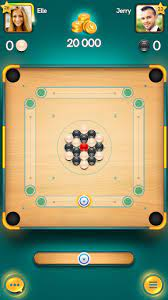

In this game, players are young graffiti artists who, upon being caught in the act of "tagging" a metro railway site or run through the railroad tracks to escape from the inspector and his dog.

When playing chess, your brain will be challenged to exercise logic, develop pattern recognition, make decisions both visually and analytically, and test your memory. Chess can be enjoyed by any age—as a result, these brain exercises can be part of the health of your brain for your entire life!

the carrom board game online helps to mould the player into a better individual. Increased attention, sharpness, focus, foresight — all help the person in their day to day life as well.

Playing Ludo or any other strategy game will teach you a lot about personal skills or soft skills. Every time you play, you either win or lose. So coping with losses and not being too overwhelmed by success is one of the essential qualities you learn from playing the Ludo game.